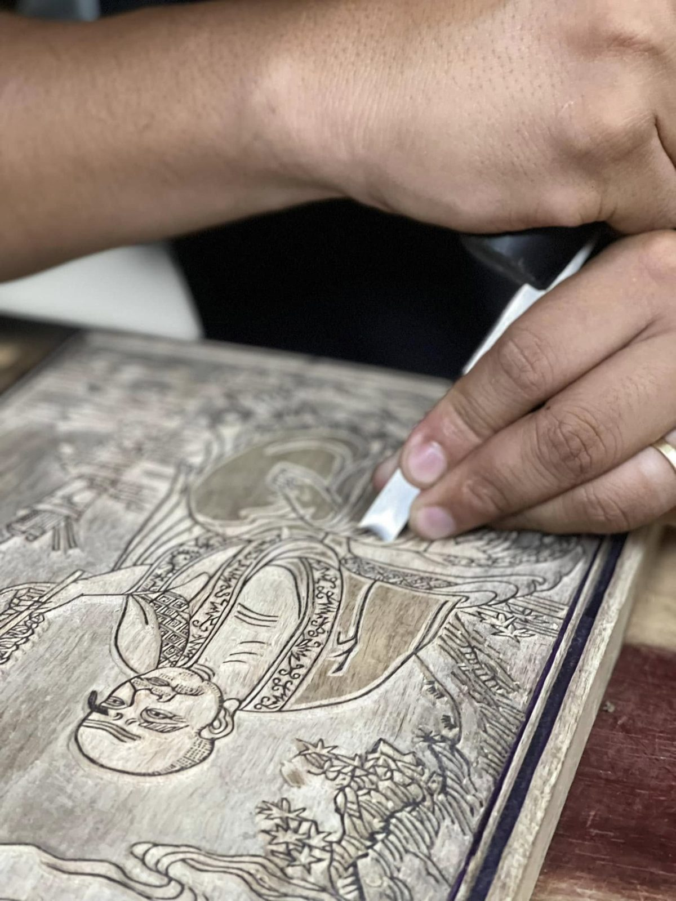
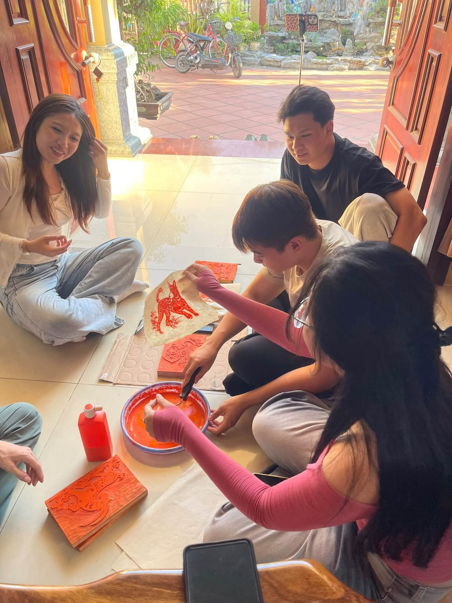
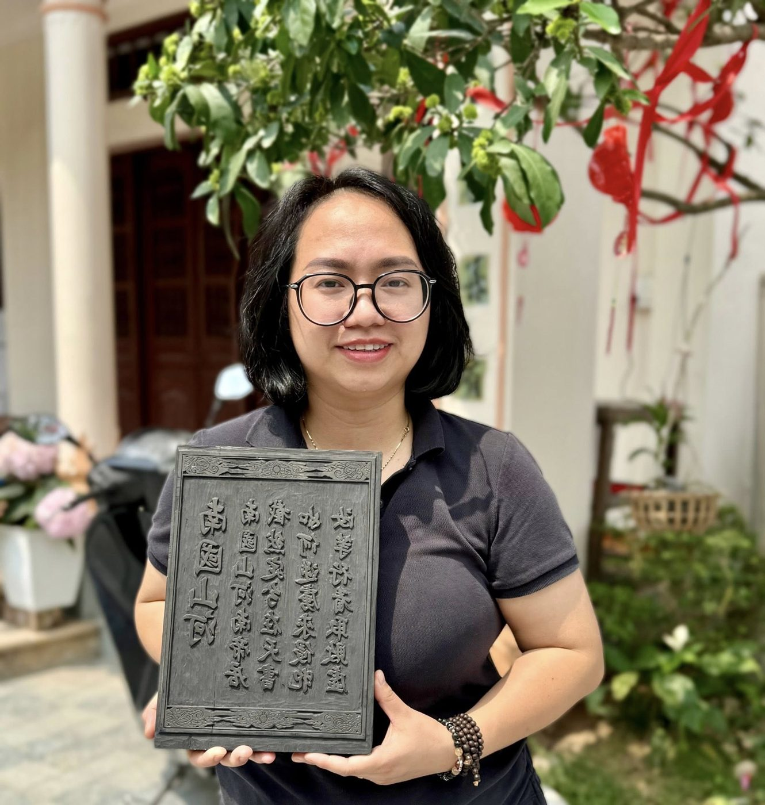
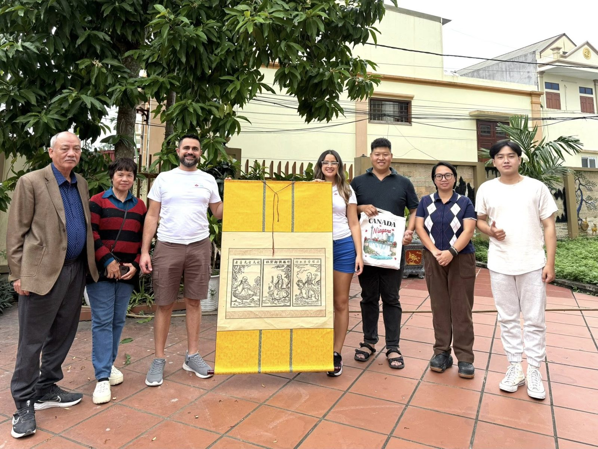
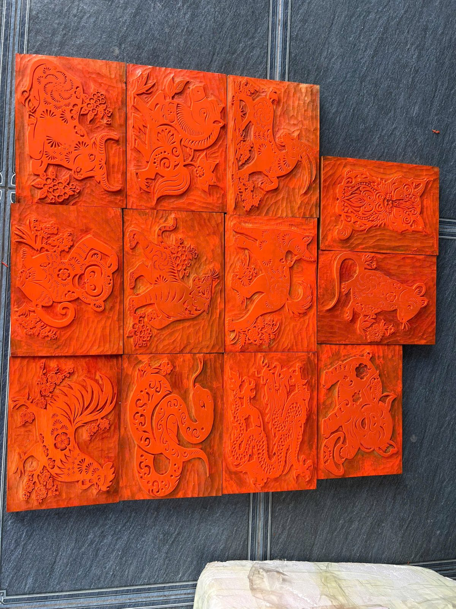
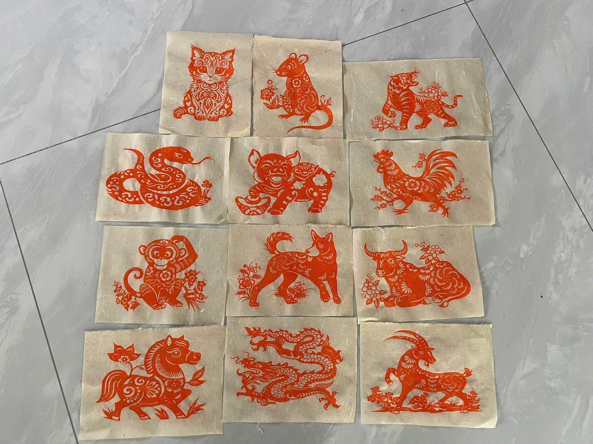
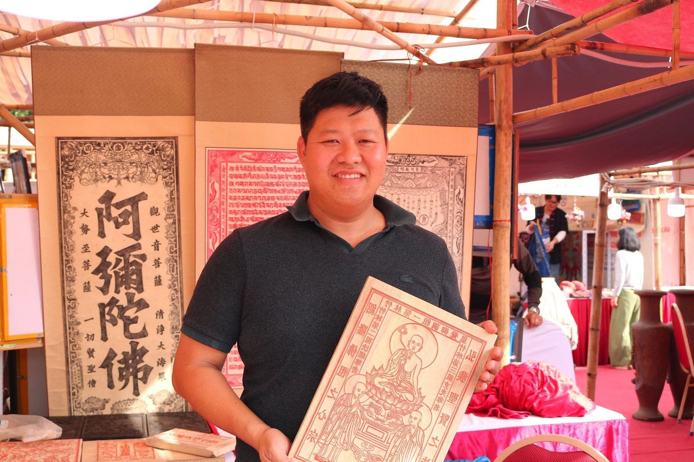
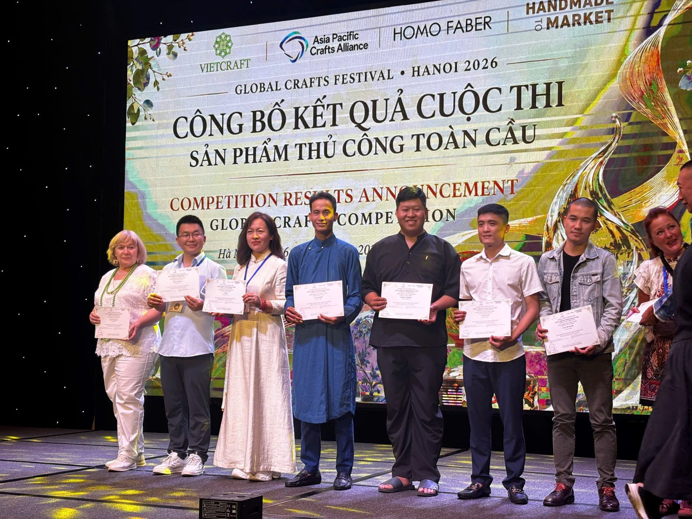
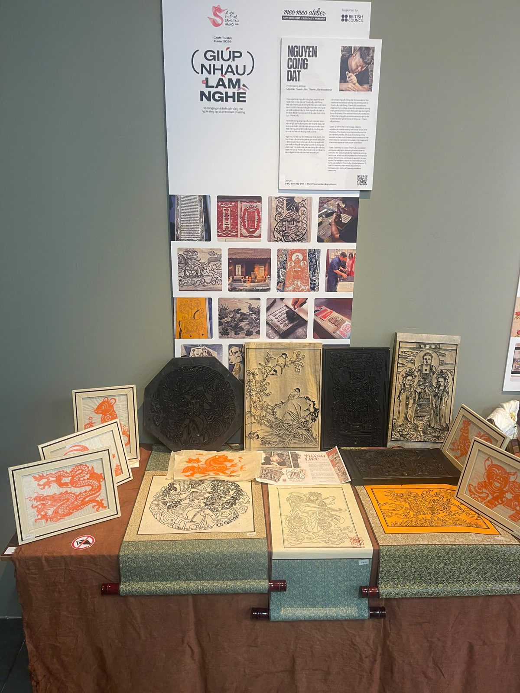
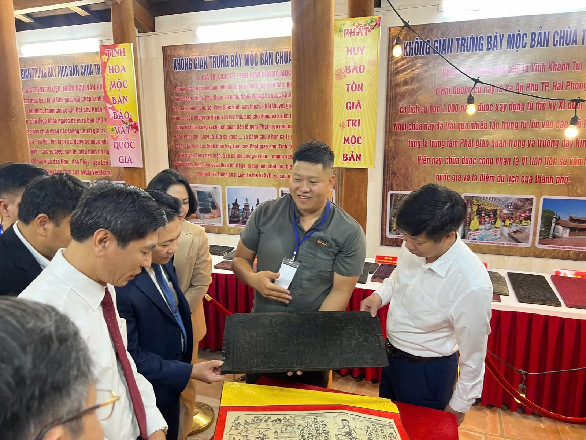

The Vietnamese zodiac, printed by hand
Join artisan Nguyễn Công Đạt of Thanh Liễu, Vietnam’s historic woodblock-printing village. Ink a hand-carved block, pull a print of your zodiac animal, hear the story of the 12 animals, and pick up your first Vietnamese words along the way.
Cùng nghệ nhân Nguyễn Công Đạt của làng Thanh Liễu phết mực, in tranh con giáp của bạn trên ván khắc sẵn, nghe chuyện 12 con giáp và học những từ tiếng Việt đầu tiên.


About Thanh Liễu woodblocks · Về mộc bản Thanh Liễu
Gần 600 năm khắc chữ vào gỗ

Thanh Liễu village, once called Hồng Lục, in today’s Hải Phòng was Vietnam’s centre of woodblock printing from the 15th to the 19th century. Its founder, the scholar Lương Như Hộc, learned the craft on two diplomatic missions to the Ming court, in 1443 and 1459, and brought it home to his village. The craft grew under the Later Lê dynasty and peaked under the Nguyễn, when the village was known as the Hồng Liễu printing guild.
Thanh Liễu carvers made blocks for Buddhist scriptures, poetry, decorative pictures, seals and talismans. Their prints are still kept at Vĩnh Nghiêm, Bổ Đà and Bà Đá pagodas, and in 1758 Hồng Lục artisan Nguyễn Huy Vượng carved the Phúc Giang school woodblocks, now on UNESCO’s Memory of the World Asia-Pacific register. In 2024 the provincial People’s Committee recognized Thanh Liễu woodblock printing as a traditional craft, but only eight households still carve today.
Làng Thanh Liễu (xưa là Hồng Lục), nay thuộc Hải Phòng, từng là trung tâm khắc in mộc bản của cả nước từ thế kỷ XV đến thế kỷ XIX. Ông tổ nghề là Thám hoa Lương Như Hộc, người hai lần đi sứ nhà Minh (1443 và 1459) rồi về truyền nghề cho dân làng. Nghề phát triển từ thời Lê sơ và cực thịnh dưới triều Nguyễn với tên gọi phường in Hồng Liễu. Năm 2024, UBND tỉnh Hải Dương công nhận khắc in mộc bản Thanh Liễu là nghề truyền thống; hiện chỉ còn tám hộ giữ nghề khắc.
How a woodblock is made · Quy trình khắc in
Bốn vật liệu, sáu công đoạn
From choosing the wood to drying the finished print, every stage rests on the artisan’s experience, precision and rhythm of hand. At the workshop you will do stage 5 yourself, on a hand-carved zodiac block.
Từ chọn gỗ đến khi bản in được hong khô, công đoạn nào cũng cần kinh nghiệm, sự chính xác và nhịp tay của nghệ nhân. Tại workshop, bạn sẽ tự tay làm công đoạn 5 trên ván con giáp khắc sẵn.
Process and photos: Mộc bản Thanh Liễu · Nội dung và hình ảnh: Mộc bản Thanh Liễu
Programme · Chương trình
Từ câu chuyện đến bản in
Starts at 2:00 PM, Sunday 6 December 2026 · Bắt đầu lúc 14:00, Chủ nhật 06.12.2026
CVCEC and VICEE introduce the programme.
CVCEC và VICEE giới thiệu chương trình.
Artisan Nguyễn Công Đạt shows the four essentials of Thanh Liễu printing (persimmon wood, the dao ngang knife, vermilion ink and dó paper) and how words and pictures are carved in reverse.
Nghệ nhân giới thiệu bốn vật liệu, dụng cụ cốt lõi (gỗ thị, dao ngang, mực chu sa, giấy dó) và cách khắc ngược chữ, hình.
The great river race of the 12 animals: why the Rat came first, why Vietnam has a Cat instead of a Rabbit, and the character of each animal.
Cuộc đua qua sông, vì sao Chuột đứng đầu, vì sao Việt Nam có Mèo thay Thỏ, và tính cách từng con giáp.
On pre-carved zodiac blocks, print your own animal while learning a Vietnamese verb for every move: phết (brush on), đặt (lay), xoa (rub), bóc (peel).
In con giáp của bạn trên ván khắc sẵn, học một động từ tiếng Việt cho mỗi thao tác.
Enjoy local traditional snacks, browse the artisan’s handmade pieces, and get your follow-up Vietnamese lessons.
Thưởng thức đồ ăn truyền thống của địa phương; xem, mua sản phẩm thủ công và nhận bài học tiếng Việt sau workshop.

The Vietnamese zodiac · 12 con giáp
Bạn tuổi con gì?
In Vietnamese folk belief, each animal has its own character. Enter your birth year to find yours, then print it at the workshop. Look out for two Vietnamese twists: the Cat instead of the Rabbit, and the Buffalo instead of the Ox.
Nhập năm sinh để tìm con giáp của bạn, rồi in đúng con vật ấy tại workshop.
Born in January or early February? The lunar year starts at Tết, so your animal may belong to the previous year. · Sinh trước Tết thì có thể thuộc con giáp của năm trước.



The artisan · Nghệ nhân
Woodblock artisan of Thanh Liễu village
Born in 1992 in Thanh Liễu, Đạt is the 17th generation of carvers in the Nguyễn Công family. As a child he learned to carve and print seals from his uncle and village artisans; after studying interior design at Hanoi Open University, he taught himself Hán Nôm, the classical script, to read old woodblocks.
Since 2010 he has searched pagodas across northern Vietnam for the work of his village’s carvers, identifying more than 250 Thanh Liễu artisans who carved or printed Buddhist texts between 1698 and 1945. In 2023 he co-founded a village woodblock association that runs free workshops for young people.
Sinh năm 1992, đời thứ 17 của dòng họ Nguyễn Công theo nghề khắc in. Từ năm 2010, anh đi khắp các chùa miền Bắc tìm lại tên hơn 250 nghệ nhân Thanh Liễu từng khắc, in kinh sách (1698–1945). Năm 2023, anh cùng sáng lập hội khắc in mộc bản của làng, mở các buổi trải nghiệm miễn phí cho người trẻ.



Available on the day · Sản phẩm tại workshop
Mang một chút mộc bản về nhà
Handmade pieces by artisan Nguyễn Công Đạt, available at the workshop for anyone interested.
Sản phẩm thủ công của nghệ nhân, có bán tại workshop cho ai quan tâm.
Learn Vietnamese · Học tiếng Việt
Những từ tiếng Việt đầu tiên, từ bàn in
Try two short exercises before or after the workshop. Drag the words, or tap to choose and tap to place, and press the speaker to hear a Vietnamese voice.
Làm hai bài tập ngắn trước hoặc sau workshop: kéo thả từ (hoặc chạm để chọn, chạm để đặt) và bấm loa để nghe giọng đọc tiếng Việt.
Audio uses your device’s built-in Vietnamese voice. · Giọng đọc dùng giọng tiếng Việt có sẵn trên máy của bạn.
Điền động từ vào chỗ trống: quy trình làm tranh mộc bản
Drag each verb into its sentence, or tap a verb and then tap a blank. Tap a filled blank to take the verb back. Steps 4 to 7 are the ones you do yourself at the workshop.
Nối từ tiếng Việt với nghĩa tiếng Anh
Tap a Vietnamese word to hear it, then tap its English meaning. On a computer you can also drag the word onto its meaning.
Chuyện 12 con giáp bằng tiếng Việt dễ hiểu
The great river race, told in short bilingual sentences with audio: who was clever, who was honest, who came late, and how the 12 animals got their order.
Ý nghĩa mỗi con giáp
Character, symbols and wishes linked to each animal in Vietnamese life, plus how to say your own: “Tôi tuổi Mèo.”
Register · Đăng ký
Giữ một chỗ bên bàn in
A small-group, hands-on session so everyone gets to ink and print. Please register early.
Workshop theo nhóm nhỏ để ai cũng được tự tay phết mực và in tranh. Mời bạn đăng ký sớm.